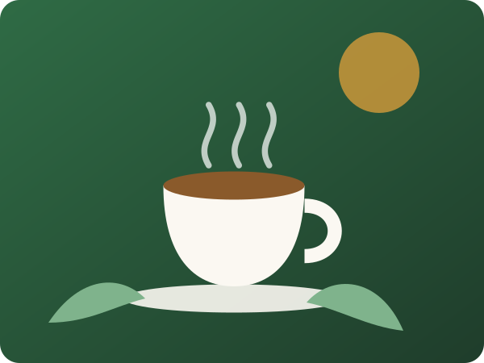

Fresh Tea, Straight From the Garden
At Leaf & Brew we bring you premium loose-leaf teas sourced directly from small family estates in Sylhet, Srimangal and Darjeeling. Every leaf is hand-picked, gently dried and packed within days, so the flavour you taste at home is just as bright as it was in the garden.
Whether you love a strong morning cup of black tea, a calming green tea in the afternoon or a spicy masala chai with friends, we have a blend made for you.

Why Choose Leaf & Brew?
100% Natural
No artificial flavours, colours or preservatives. Just pure leaves and real spices.
Fast Delivery
Same-day delivery inside Dhaka and 2 to 3 days anywhere else in Bangladesh.
Fair Trade
We pay tea garden workers fair prices and support their local communities.
Our Story
Leaf & Brew started in 2020 as a small stall in Dhaka run by two friends who grew up near the tea gardens of Srimangal. They missed the taste of truly fresh tea in the city, so they began bringing small batches back home for family and neighbours.
Today we work with more than fifteen estates and serve thousands of happy tea lovers. Our promise has never changed: honest prices, fresh leaves and a cup that makes your day a little better.